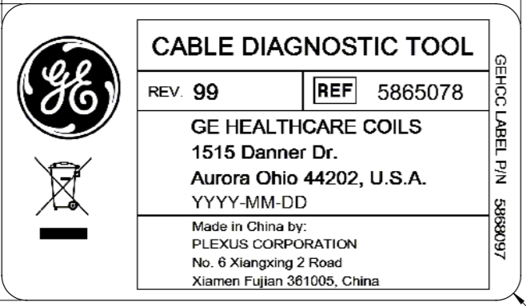
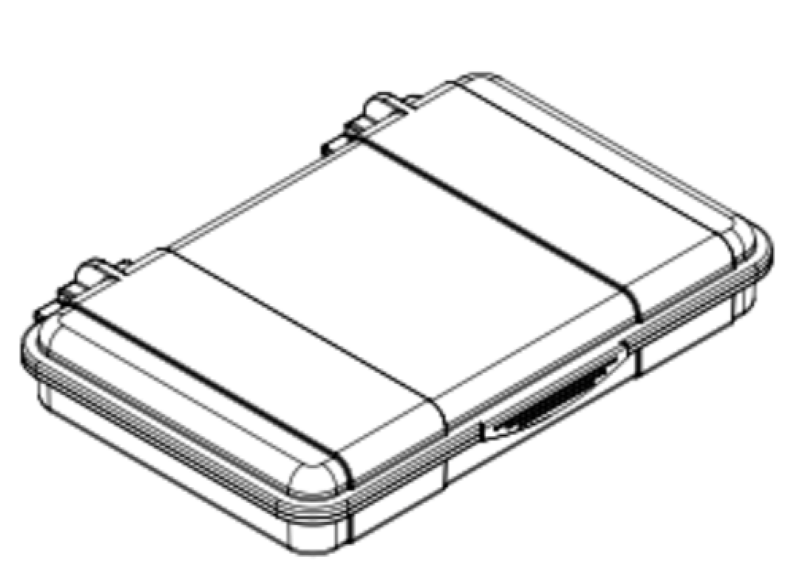
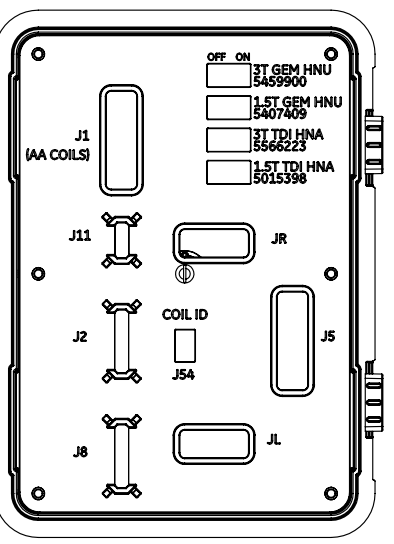
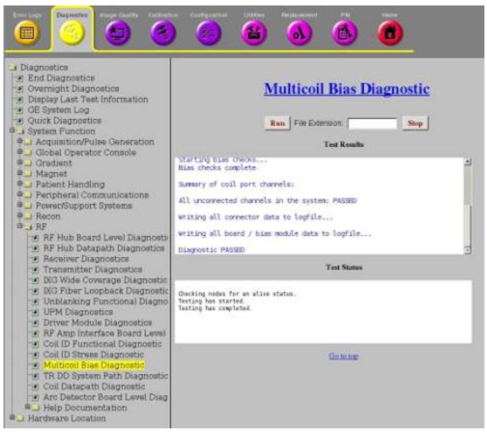
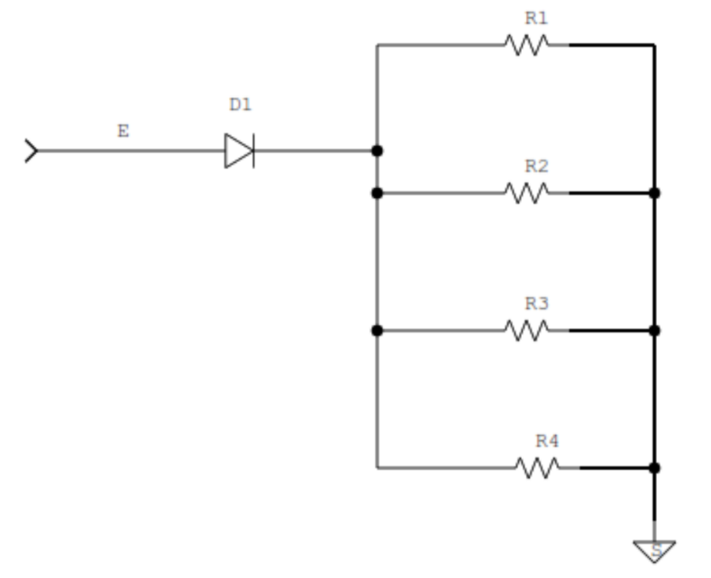

- 00000018WIA30CCC1A0GYZ
- id_20400901.4
- Feb 8, 2023 6:50:02 AM
System Cable Diagnostic Tool
The System Cable Diagnostic (SCD) Tool will be compatible with 8 separate cables as contained in System Cable FRU List as well as GE 1.5T/3T MR scanners with P-Connector style ports. The tool mimics the coil impedance on each channel such that when connected to the system with the cable in question, the MC bias diagnostic tool could identify opens/shorts due to the cable.
System Cable Diagnostic Tool
To identify the SDC Tool, see the images below.


| Description | Part Number | Quantity |
|---|---|---|
| System Cable Diagnostic Tool | 5865078 | 1 |
Environmental Requirements
Storage Requirements: SCD Tools can be stored in best choice location, defined by Field Engineer, to easily access and carry around (i.e. backpack, book bag, toolbox, ect.).
For SCD Tool
- Dimensions as stored lying flat: 22.9 x 17.8 x 4.3 cm (9.0 x 7.0 x 1.7 in)
- Weight: 2.1 kg (4.7lb)
Cable FRU’s Intended for Troubleshooting
| Item | Description | GE Part Number |
|---|---|---|
| 1 | GEM 1.5T HNU System cable FRU and packaging | 5407409 |
| 2 | 1.5T Kizuna Anterior Array, Cable FRU | 5015198 |
| 3 | FRU, 1.5T TDI HNA System Cable | 5015398 |
| 4 | 1.5T GEM AA CABLE FRU | 5746413 |
| 5 | GEM 3T HNU System Cable FRU and packaging | 5459900 |
| 6 | FRU, Kizuna AA Long Cable | 5543532 |
| 7 | FRU, 3T GEM AA Cable | 5543530 |
| 8 | FRU, TDI HNA System Cable Assembly | 5566223 |
Multi Coil Test Procedure
Test Equipment:
- MR450W or Artist, Voyager/Voyager AIR system
- MR750W or Architect, Pioneer, Premier system
System Under Test:
- System Cable Diagnostic (SCD) Tool (PN: 5865078)
- Any of the 8 cables can be tested for MC Bias faults using the SCD Tool
- 1.5T or 3T GEM HNU Cable (PN: 5407409, PN: 5459900)
- 1.5T or 3T TDI HNA Cable (PN: 5015398, PN: 5566223)
- 1.5T or 3T GEM AA Cable (PN: 5746413, PN: 5543530)
- 1.5T or 3T Kizuna AA (PN: 5015198, PN: 5543532)
- Connect the coil-side connectors of the cable under test to the SCD Tool. THIS MUST BE DONE BEFORE NEXT STEP or the system will not recognize the coil ID (cable under test).Note The reference designators from cable connectors will match reference designators of the SCD Tool:
- Kizuna AA, GEM AA cables connect to J1
- GEM HNU Cables connect to J2, J8, J11, J54 (Coil ID)
- TDI HNA Cables connect to JL (Left side connector), JR (Right side connector), J5, J54 (Coil ID) Note When testing either the GEM HNU or Kizuna HNA cables, you will need their corresponding coil ID switch turned to the “ON” position
Figure 3. Reference Designators and Connector Locations for SCD Tool 
- Plug in the P-Connector of the cable under test to its following P-Port (see top of P-Connector for each cable for corresponding port).
- Open the service browser tool from the MR system.
- Navigate to Diagnostics >> System Function >> RF >> Multicoil Bias Diagnostic.

- From the Multicoil Bias Diagnostic screen, click “RUN”, and wait for the test results.
- Observe the test results for any failures within the cable under test.
- TPS reset after completion of the Multi Coil Bias Diagnostic tests.
Troubleshooting
- What to look for during a Failure?
Cable is Not recognized
- Do you see any issues with the pins at the P-port connector or any of the cable connectors? (Bent, loose or etc.)
- Are the coil-side connectors plugged into their corresponding connectors on the SCD tool?
- Did you connect the coil-side connectors of the cable under test to the SCD tool before plugging the P-Connector into the system?
- Are you using the Correct cable at the Correct system? (1.5T vs 3.0T)
- Is the correct software version installed?
APPENDIX
Illustration of Coil Design

Port and Cable Interfaces
| Tool Designator | Cables | Tool Connector | Cable Connector Designator |
|---|---|---|---|
| J1 |
1.5T Kizuna AA 3T Kizuna AA 1.5T GEM AA 3T GEM AA | 5Rx20C Female Versi | J1 |
| J2 |
1.5T GEM HNU 3T GEM HNU | 8CH Mini Coax Rosenberger | J2 |
| J8 | 8CH Mini Coax Rosenberger | J8 | |
| J11 | 4CH Mini Coax Rosenberger | J11 | |
| JL |
1.5T Kizuna HNA 3T Kizuna HNA | 4Rx10C Female Versi | JL |
| JR | 4Rx10C Female Versi | JR | |
| J3 | 5Rx20C Female Versi | J5 | |
| J54 |
GEM HNU Kizuna HNA Coil IDs | CONN HEADER GH TOP 6POS 1.25MM | J54 |